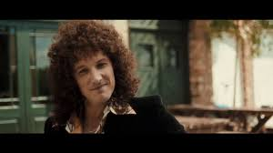

Bohemian Rhapsody este un film biografic din anul 2018, care prezintă evenimentele desfășurate între 1970 și 1985, ani definitorii pentru trupa engleză Queen și membri acesteia, John Deacon, Brian May, Freddie Mercury și Roger Taylor, cu accentuarea artistică a vieții personale a lui Freddie Mercury.
Filmul prezintă, pe scurt, evenimentele petrecute în viata celor patru, progresul lor ca grup muzical rock aparte, de la o trupă care își căuta identitatea la o formație cu rang de superstar, prezentând, în același timp, drumul artistic al succesului melodiilor trupei.
Rolurile principale sunt interpretate de actorul american Rami Malek, ca Freddie Mercury, cu suportul unei distribuții mixte de actori britanici și americani, Lucy Boyton, ca Mary Austin, Joseph Mazzello, ca John Deacon, Gwilym Lee, ca Brian May și Ben Hardy, ca Roger Taylor.
Filmul a fost lansat în Regatul Unit pe 24 octombrie 2018 și în Statele Unite pe 2 noiembrie 2018, primind revizii mixte din partea criticilor de specialitate. Portretizarea vieții și a sexualității lui Mercury, respectiv a evenimentelor și a vieților celorlalți trei membri au fost criticate. În schimb, performanța artistică a lui Malek, precum și recreerea scenelor artistice și muzicale ale trupei, incluzând cele 20 și ceva minute de la Live Aid, din 13 iulie 1985, de pe Stadionul Wembley, au primit unanime aprecieri pozitive.[4][5]
Regizat filmic cvasi-integral de Bryan Singer, după un scenariu de Anthony McCarten, filmul biografic a fost produs de britanicii Graham King, producător de film, și de managerul lui Queen, Jim Beach. Membrii trupei, Brian May și Roger Taylor au fost consultanți ai întregului proces. O realizare britanico-americană, filmul a fost produs de companiile 20th Century Fox, Regency Enterprises, GK Films și Queen Films, având în Fox unicul distributor al peliculei.